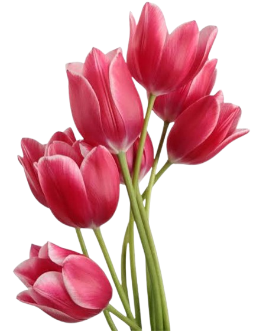
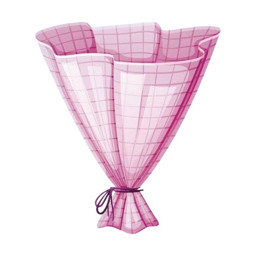

Just like this bouquet you built, our life together is a collection of beautiful moments, one by one. You are the grace in my world and the light in my days.
Keep blooming, keep shining, and never stop dreaming. You are capable of everything you imagine, and I am right here to walk every path with you.
🌹❤️🌹